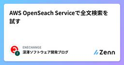

ENECHANGEのフィード
https://zenn.dev/p/enechange_blog
ENECHANGEグループは、「エネルギー革命」を技術革新により推進し、より良い世界を創出することをミッションとするエネルギーベンチャー企業です。 https://enechange.co.jp/
フィード

AWS OpenSeach Serviceで全文検索を試す
ENECHANGEのフィード
OpenSeachで全文検索を試す はじめに以前、AWS OpenSeach Serviceを用いてサイトの検索機能を実装したことがあり、その時のことを思い出しつつ知識の整理のために使い方、当時使った機能についてまとめてみました。 試した環境AWS OpenSeach ServiceAmazon OpenSearch Serverless があるため環境構築が容易以下の内容は、OpenSearch ダッシュボードで実施 検索の前準備コネクションを作成するコネクションに対してインデックスを作成するコネクションに対して検索に用いるデータを投入しインデ...
4日前

Djangoでテストデータを用意する
ENECHANGEのフィード
概要半年前に転職して、現職でがっつり Python x Django を使用した開発を行っている。これまで趣味で使うことや仕事で隙を見て使用することがあったが、これを期にしっかり学んでいきたい。本記事では、Djangoをでユニットテストを行う上で、テストデータを用意する複数の方法についてそれぞれの特徴を簡単にではあるが整理していきたい。テストデータを用意する3つの方法として以下を取り上げる。モデル.objects.create を使用するフィクスチャ を使用するFactoryBoy を使用する 環境Python : 3.13.0Django : 5.1.6...
1ヶ月前
現場で使えるライブラリアップデートの進め方
ENECHANGEのフィード
ライブラリアップデートってついつい後回しになってしまいますよね。私たちのチームのプロダクトは運用が始まって10年程なのですが、ライブラリアップデートは後回しにされがちで、普段開発していても、「ライブラリが古すぎてある日急にコードが動かなくなる」ということが定期的に起こってました。 ライブラリアップデートはなぜ必要なのか？ ライブラリアップデートが必要な理由今の開発チームの状況をなんとかして変えたいという思いがあったので、それを実現するために、ライブラリアップデートがなぜ必要なのかを言語化してみました。開発が止まるリスクを避けるため脆弱性に対応するため迅速に脆弱性に対応...
3ヶ月前
Buildkite で実行される RSpec のカバレッジを SimpleCov で計測してレポートを見る
ENECHANGEのフィード
今回やったことSimpleCov による RSpec カバレッジの計測Buildkite で並列にテストを実行してレポートをまとめる（PR への push の場合）レポートページのリンクを PR にコメント 実装 カバレッジ計測SimpleCov を Gemfile に追加し spec_helper.rb に以下のコードを追加します。SimpleCov.start に 'rails' 引数を渡さないと後々並列テストのレポートをマージする時にうまくいきませんでした。require 'simplecov'SimpleCov.start 'rails' テス...
4ヶ月前
prepend_before_action, before_action, append_before_action の実行順
ENECHANGEのフィード
はじめにRuby on Rails のコントローラーにはアクションが実行される前に特定のメソッドを実行するためのコールバックとして prepend_before_action、before_action、append_before_action が用意されています。クラスを継承した場合などの順番がなかなかまとまっていない気がしたので検証してみました。 実行順 before_actionbefore_action はアクションの実行前に実行されるコールバックで、複数の before_action が設定された場合は設定した順番（before_action :method ...
5ヶ月前
Pythonでプロファイリングする
ENECHANGEのフィード
はじめにとある処理の実行速度を計測したいと思った時に、いつもprint文を仕込むだけだったのですが、ハイパフォーマンスPython 第2版 に載っていた方法が便利だったので下記にまとめます。 環境・M1Mac・OS:Ventura13.5 事前準備sample.py というファイルに下記のsample_funcという関数を定義しました。def sample_func(): # 計測したい処理 1. print文import timefrom sample import sample_funcstart_time = time.time()sa...
9ヶ月前
ECSのApplication Auto Scalingまとめ
ENECHANGEのフィード
はじめに本番環境にて、ECSのオートスケール設定が適切でなかったために、スパイクアクセスに耐えられずサイトがダウンするというやらかしをしました。自戒を込めて記事にまとめます。 前提ECS on FargateTerraform Application Auto ScalingECS on Fargateで利用可能なApplication Auto Scalingでは、CloudWatchアラームで定めたメトリクスの閾値で、スケールアウトやスケールインを実行します。 1. ステップスケーリングポリシーステップスケーリングポリシーは、段階的にスケールアクション...
9ヶ月前
【自分用メモ】たまにしか使わなくて忘れがちなgitコマンド
ENECHANGEのフィード
はじめにたまにしか使わないgitコマンドは忘れがちなので、自分用メモとして記事にします。 今いるブランチだけを表示したいgit branch --contains ローカルのブランチをまとめて削除したいgit branch | grep 'feature/' | xargs git branch -d'feature/'部分を変えれば、releaseブランチなども同様に消せます。 ブランチの名前を変更したいgit checkout before-branchgit branch -m after-branch 指定のタグ(ブランチ)からブランチを切りたい...
9ヶ月前
ECSのCPUとメモリ割当の早見表
ENECHANGEのフィード
TerraformでECSにCPUとメモリを割り当てる際にこの表を見に行って単位換算するのが面倒なので、早見表を作ります。ちなみに、対応していない値を割り当てると、下記のエラーが出ます。Error: ClientException: No Fargate configuration exists for given values. 前提条件ECS FargateLinux プラットフォーム 1.4.0 以降 早見表CPU の値メモリの値256 (.25 vCPU)1024 (1 GB)256 (.25 vCPU)2048 (2 GB)...
10ヶ月前
AWS SAM CIL で PostgreSQL を利用する Lambda ローカル開発環境
ENECHANGEのフィード
はじめにAWS Lambda は手軽に関数を実装、公開できて便利なサービスですが、ちょっと手の込んだことをしようとすると Lambda の特殊な環境の影響で面倒になってしまうことがあったりします。例えば PostgreSQL を使おうとした場合、通常の Lambda 環境には PostgreSQL 用のパッケージが入っていないので Lambda Layer というミドルウェア層が必要になります。今回は AWS SAM CLI を用いて PostgreSQL を利用する関数をローカルで開発するための環境構築を行ったので、その方法を共有します。 今回話すことローカル開発環境...
1年前
定数が原因で Rspec が突然失敗するようになってしまった
ENECHANGEのフィード
はじめに先日既存プロダクトへの機能追加と一緒に新機能に対する Rspec を追加したところ、その時追加したのとは全く関係ない既存機能の Rspec が失敗するようになってしまいました。単純な原因ではあったものの原因特定までにそこそこ時間がかかってしまったので解決までの過程を残しておきます。 原因最初に原因を言うと、タイトルの通り Rspec 内の定数が原因でした。テストが失敗するようになってしまった Rspec では以下のようにグローバルな定数を定義していたのですが、これと同名の定数を使う別のテストが同一プロセス内に存在し、定数内容がバッティングしてしまったようでした。...
1年前
クリーンアーキテクチャにおける Domain層と UseCase層の棲み分けを Bard と壁打ちをして自分なりに理解しました、の忘備録
ENECHANGEのフィード
この記事についてクリーンアーキテクチャを学んだことがなく Domain層と UseCase層の違いがいまいち理解できていない人間が Bard と壁打ちをして自分なりに納得した答えに辿り着いたので、その忘備録です。Bard との壁打ちではなく、クリーンアーキテクチャについての自分なりの整理についての忘備録です。きっかけはこの記事を読んで前提知識が足りていないと感じたためです。 クリーンアーキテクチャとはクリーンアーキテクチャとは、ソフトウェアの設計とアーキテクチャに関する考え方です。クリーンアーキテクチャでは、アプリケーションを以下の 5 つの層に分割します。Dom...
1年前
AWS CLIでのS3操作まとめ
ENECHANGEのフィード
ls 一覧表示 バケットの一覧表示% aws s3 ls2023-09-01 10:00:00 bucket-name12023-09-02 10:00:00 bucket-name2 オブジェクトの一覧表示% aws s3 ls s3://bucket-name1 PRE dir/ 2023-09-03 10:00:00 1111 file.png2022-09-04 10:00:00 2222 file2.png% aws s3 ls s3://bucket-name1/dir/202...
1年前
Lambdaコンテナ関数ではAWS提供ベースイメージを使う
ENECHANGEのフィード
コールドスタートに4～5秒かかるPythonのLambdaコンテナ関数があり、改善策を調べていたら、AWS公式ブログに下記の記述を見つけました。AWS が提供するベースイメージは、Lambda サービスによってプロアクティブにキャッシュされます。つまり、ベースイメージは近くの別のアップストリームキャッシュにあるか、ワーカーインスタンスキャッシュにすでに存在しています。はるかに大きいにもかかわらず、キャッシュされないかもしれないサードパーティのベースイメージと比較するとデプロイ時間が短くなる可能性があります。コンテナイメージとしてパッケージ化された Lambda 関数の最適化 | A...
2年前
AWS LambdaのPythonコードでBugsnagを使う際は「asynchronous=False」にする
ENECHANGEのフィード
AWS LambdaのPythonコードでBugsnagを使う際、デフォルトの「asynchronous=True」のままだと、通知が飛びませんでした。深く追ってはいませんが、非同期的な通知より先にLambda関数が終了してしまうのでしょう。「asynchronous=False」を指定したところ、意図どおり通知が飛ぶようになりました。以下、参考リソースです。By default, requests are sent asynchronously to BugSnag. If you would like to block until the request is done, y...
2年前
Green Codeを書いていますか
ENECHANGEのフィード
こんにちは。ENECHANGEのエンジニア兼マネージャのkcです。先日、ENECHANGEの採用ページがリニューアルされました。https://engineer-recruit.enechange.co.jp/このサイトの中で全面に出ている印象的な言葉「Green Code」ですが、エネルギーの未来をつくるというENECHANGEのミッション、エッセンスを日々書いているコード一行一行に落とし込んでいて、明日も頑張ろうと思えるような素敵な言葉だと思います。でも、Green Codeってエネルギー関連のシステムや環境に配慮したサービスを提供するシステムをつくるコードってだけじゃない、...
2年前
まだdelayed_job使っているの？今はgood_jobが熱い!
ENECHANGEのフィード
delayed_jobしか使ったことなくて、また使おうとしているなら是非検討してみてほしいgood_jobまずgood_jobはのgithubはこちらhttps://github.com/bensheldon/good_job good_jobをおすすめする理由・メンテされている(2023.06現在delayed_jobの最新コミットは2023年01月16日でしかも落ちている...)・delayed_jobと同じでキューをDBで管理するため、sidekickみたいにredisを立てる必要はない・delayed_jobよりドキュメントがしっかりしている・delayed_...
2年前
マネージャーとして知っておきたいストレス&モチベーション研究
ENECHANGEのフィード
対象とする読者これからマネージャーになる人チームのメンバーのモチベーションが上がらないと感じている人自分のモチベーションが上がらない状況を理解したい人 誰が書いているか私はエンジニアリングマネージャーとして1年半従事しています。それ以前は青年海外協力隊で2年間アフリカで学校教師をしておりました。その前は教育学部でモチベーションなど教育心理学を学んでいました。私自身モチベーションの上がり下がりやストレスを感じやすい人間で、2年間アフリカにいた際は慣れない異国の地で孤独に自分と向き合うことが多かったため、ストレスとモチベーションについて考えることが多くありました。そ...
2年前
slackチャンネル整理術
ENECHANGEのフィード
対象となる読者即座に反応すべきエラー通知チャンネルを見過ごしてしまう人雑談チャンネルの通知に気が取られて仕事に集中できない人すぐにサイドバーが未読だらけになる人たまに重要な情報が流れてくるチャンネルをちゃんと追いたい人 結論から先に未読メッセージに対してどう反応したいかで分類する【優先度MAX】仕事中でなくても常に全てを把握したいもの【優先度大】仕事中は自分へのメンション以外も誰がどんな発言をしているか把握しておきたいし、休日も自分へのメンションには気付きたいもの【優先度中】仕事中は自分へのメンションにだけ即座に反応したいもの【優先度小】仕事があらかた終わ...
2年前
自分がどのTLSバージョンでAPIにリクエストしているか知る方法
ENECHANGEのフィード
https://www.howsmyssl.com/a/check にGET リクエストしようuri = URI.parse('https://www.howsmyssl.com/a/check')https = Net::HTTP.new(uri.host, uri.port)req = Net::HTTP::Get.new(uri.path)https.use_ssl = trueresponse = https.request(req)JSON.parse(response.body)['tls_version']=> "TLS 1.3" 余談: もしs...
2年前